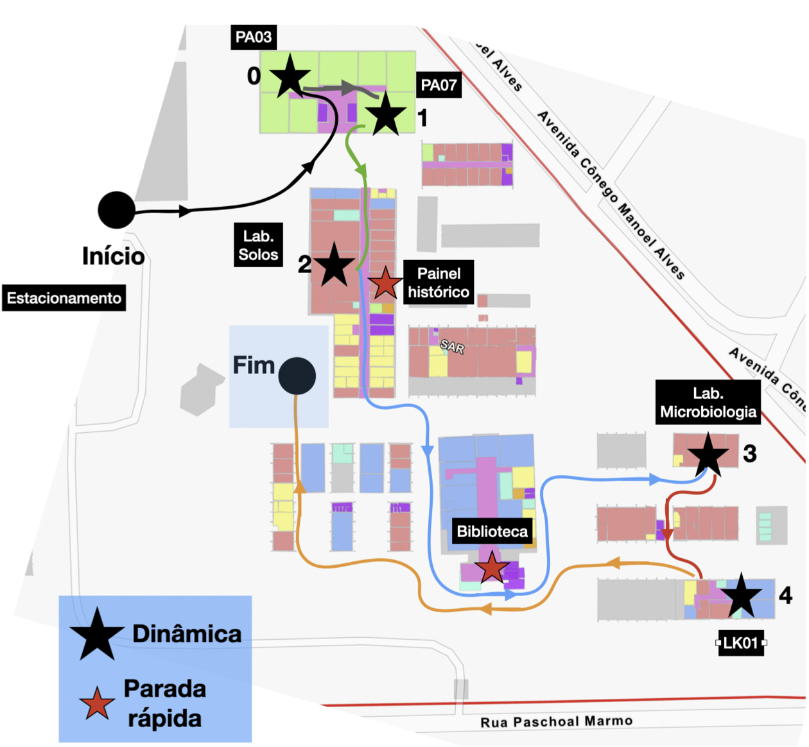
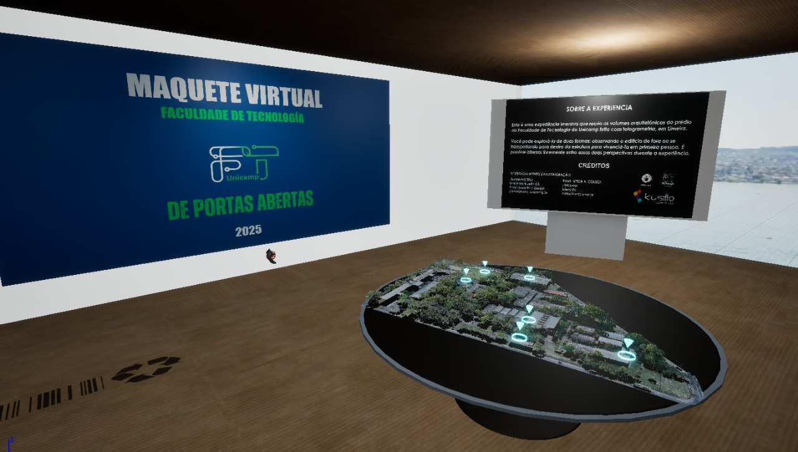
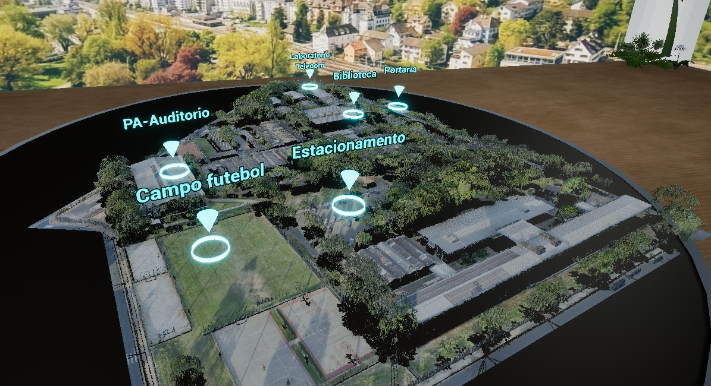
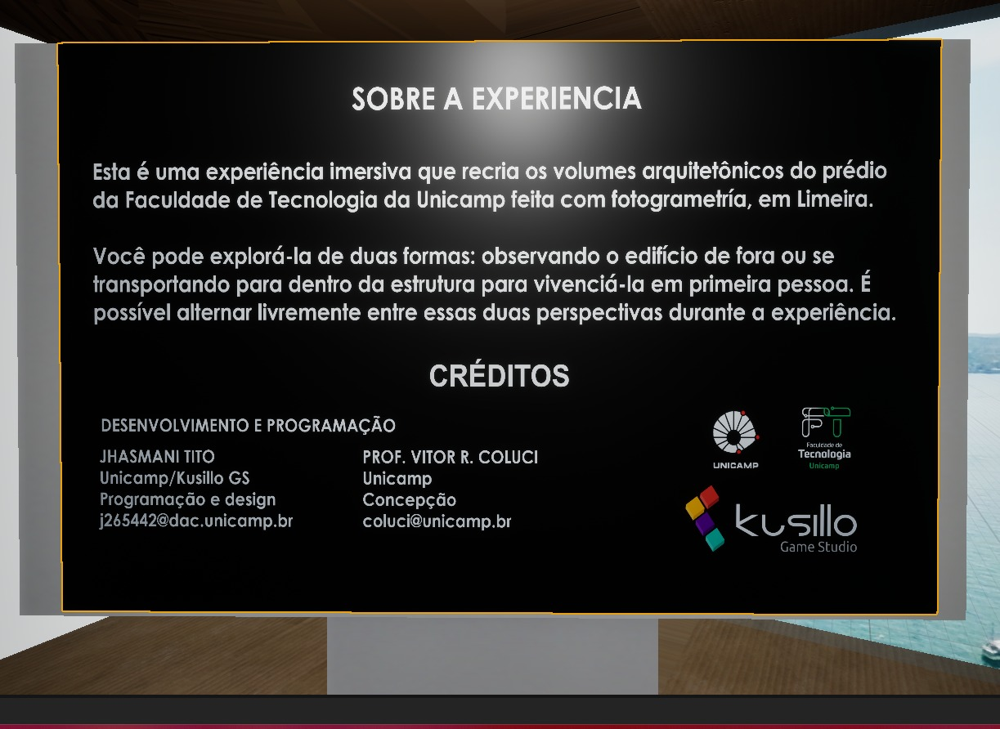
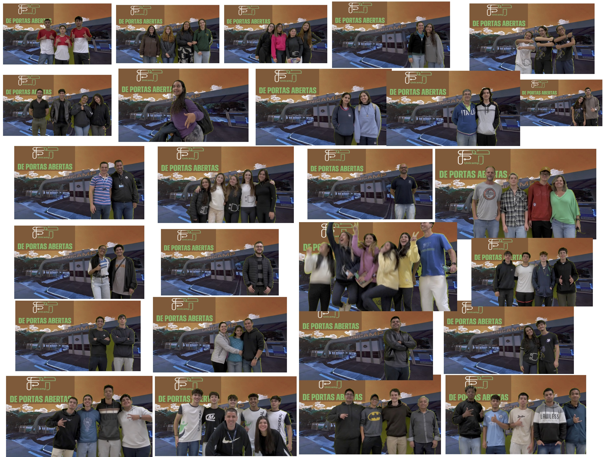
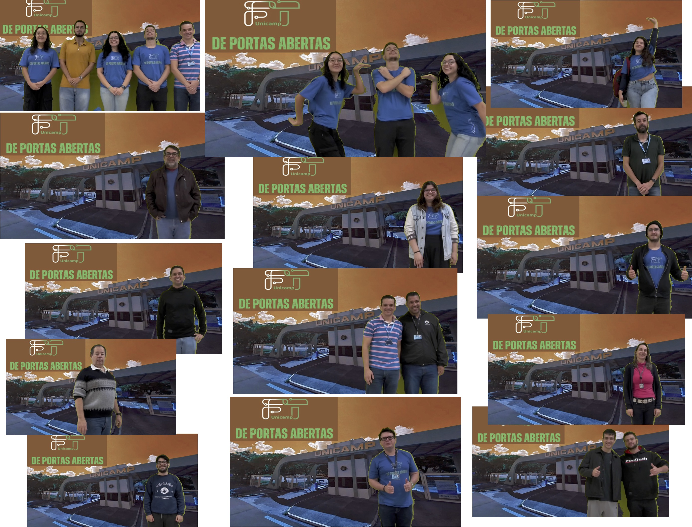
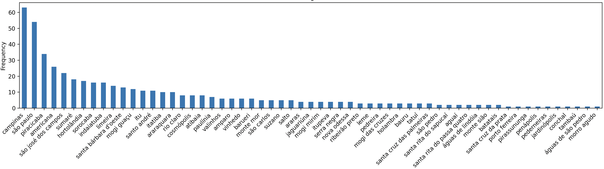
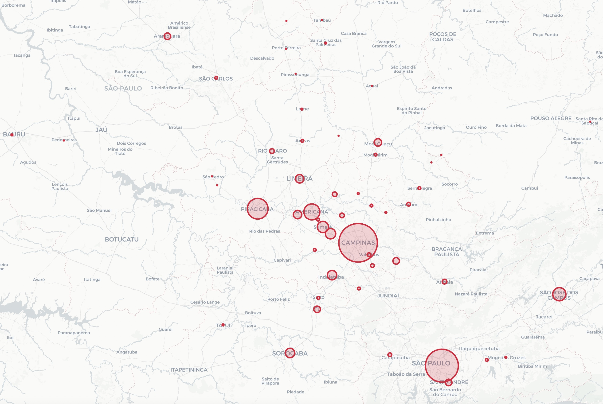
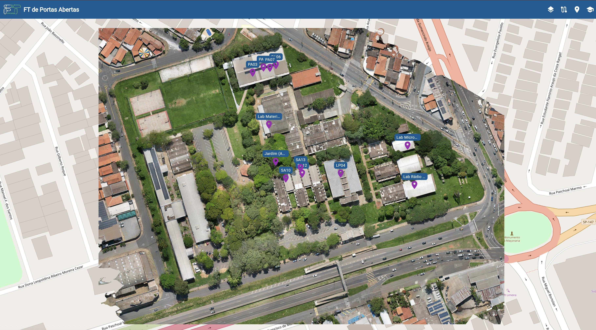

4 Planejamento
O planejamento do FT de Portas Abertas envolveu várias etapas, detalhadas a seguir.
4.1 Dinâmicas
A apresentação dos cursos da FT foi feita por meio de Dinâmicas, uma para cada área da graduação da FT:
Dinâmica 1 - Computação: Ilustração da ideia de algoritmo, o conceito básico da computação. Isso será feito apresentando alguns algoritmos usados para controlar o movimento de robôs feitos com Lego. Os visitantes poderão interagir com os robôs, modificando partes dos algoritmos e percebendo, em tempo real, os efeitos dessas modificações no movimento. Tópicos como lógica e linguagem de programação serão abordados.
Dinâmica 2 - Transportes: A importância do estudo do relevo para a construção de rodovias e ferrovias será trabalhada nessa dinâmica. Para isso, os visitantes irão até o Laboratório de Solos interagir com um simulador de relevo e de suas mudanças em tempo real (sandbox). Irão também participar de um quiz interativo sobre infraestrutura rodoviária. Após o final da trilha, os visitantes interessados no curso de Engenharia de Transportes poderão ainda ver outras atrações opcionais, como uma demonstração de drones aplicados ao monitoramento e planejamento de transportes.
Dinâmica 3 - Ambiente: Os participantes terão a oportunidade de observar organismos aquáticos e terrestres que atuam como indicadores ambientais, fornecendo informações essenciais sobre o nível de estresse ecológico na água e no solo.
Dinâmica 4 - Telecomunicações: A dinâmica irá abranger grandes áreas do curso de Telecomunicações como eletromagnetismo, circuitos elétricos, redes de comunicações, processamento de sinais e programação. Ao chegarem no laboratório LK01, os visitantes assistirão uma explicação sobre as áreas do curso e possibilidades de atuação. Em seguida, verão como pode ser feito o monitoramento de veículos que entram no campus, um importante processo em cidades inteligentes. Finalmente, passarão pelo laboratório LK02 onde poderão ver fenômenos relacionados às áreas de radiofrequência e antenas. Ao final da trilha, os visitantes interessados no curso de Engenharia de Telecomunicações poderão ainda ver outras duas atrações opcionais: utilização de óculos de realidade virtual para visualizar a transmissão de holografia em redes de alta velocidade (futuro 6G) e outra em que observarão como a própria luz visível pode ser usada para transmitir dados de forma sem fio.
Guiados por monitores, os visitantes eram levados para essas dinâmicas por meio de uma trilha ilustrada na figura a seguir.

4.2 Atrações
Além das dinâmicas, diversas atrações (atividades) foram planejadas:
Algoritmos: Apresentar o conceito principal de toda a computação e como ele é aplicado na programação de robôs.
Drones, relevo e logística: Como otimizar rotas e entregar produtos de forma mais eficiente ?
Gestão da água: Apresentar as tecnologias envolvidas remover poluentes da água
Redes de Comunicações: Perceber como circuitos elétricos, redes de comunicações, processamento de sinais e programação se unem para permitir monitorar o trânsito.
FT em Realidade Virtual: Explorar nosso campus com uma maquete virtual (Autor: Msc. Jhasmani Tito Cruz).
  
Iniciação científica: Conhecer os trabalhos desenvolvidos pelos nossos alunos.
Onde estão os nossos formandos ?: Conversar com alunos que passaram pela FT e estão no mercado de trabalho
Organizações estudantis: Conhecer as organizações estudantis e seus projetos
Eu fui !: Registrar a participação do visitante num estúdio de fotos


Olá !
Agradeçemos sua participação no evento FT de Portas Abertas !
Esperamos que a experiência tenha sido enriquecedora.
Em anexo, estamos enviando a foto de recordação do evento.
Mais informações sobre a Faculdade de Tecnologia/Unicamp
podem ser vistas em https://www.ft.unicamp.br/ .
Informações sobre o vestibular da Unicamp podem ser obtidas
em https://www.comvest.unicamp.br/ .
Comissão organizadora.4.3 Divulgação
4.3.1 Site
4.3.2 Escolas


Prezado(a) Dirertor(a) Fulano.
A Faculdade de Tecnologia da UNICAMP realizará o evento FT de Portas Abertas nos dias 13 e 14 de Junho em Limeira-SP.
Gostaríamos de convidar os alunos e professores do(a) FT - UNICAMP para nos visitar nesses dias.
Em anexo, apresentamos a carta-convite de nosso diretor com mais detalhes do evento.
Estamos também enviando o panfleto para divulgação do evento para a comunidade de sua escola, pais, alunos e familiares.
Para mais informações, acesse https://wordpress.ft.unicamp.br/ftpa/ .
É necessário realizar um agendamento da escola pelo link apresentado no site.
Será um prazer receber vocês aqui na FT/Unicamp!
Comissão organizadora.4.4 Sinalização


4.5 Mídias digitais
4.6 Aplicativo
Acesse aqui o App do FT de Portas Abertas para te ajudar na localização no Campus e para informações sobre os nossos cursos (Autor: Prof. Ulisses Martins Dias)
